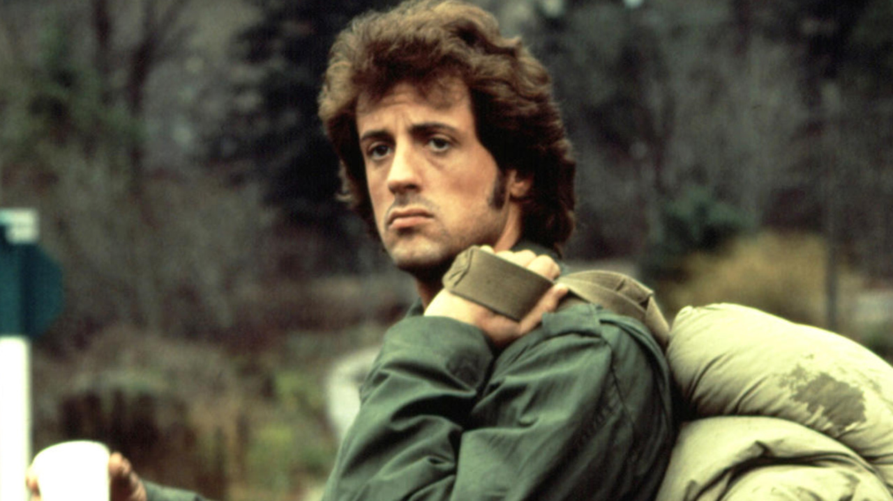

Gardenzio Stallone é conhecido do grande público apenas pelo primeiro e último nome.
O ator também trabalha como roteirista, diretor e produtor.Entre os seus papéis principais
estão Rocky Balboa e John Rambo. Sylvester Stallone nasceu em Nova Iorque (Estados Unidos)
no dia 6 de julho de 1946.
Infância
Quando Sylvester nasceu, fruto de um parto complicado, a equipe usou um fórceps, que deixou consequências
para o resto da vida do ator pois danificou um nervo em sua face.
Os pais do artista tinham uma relação bastante complicada, o que afetou a infância de Sylvester
e do seu irmão Frank.
A família se mudou para Maryland em conjunto, mas após o divórcio (ocorrido em 1957) o ator escolheu ficar com o pai.
Assim permaneceu até os 15 anos, quando voltou a viver com a mãe e o padrasto na Filadélfia.
Stallone foi uma criança problemática e chegou a ser expulso de uma série de escolas.
Carreira
Primeiros Passos
Em 1970 estreou em um filme adulto chamado The Italian Stallion.
Também começou a aparecer em alguns filmes de Woody Allen até ganhar
um papel de fato no filme Juventude à solta (1974).
Rocky
Imagem filme Roky.
Uma luta entre Muhammad Ali e Chuck Wepner inspirou Stallone a escrever o roteiro de Rocky.
A condição colocada pelo artista foi que ele também interpretasse o papel do protagonista.
RockySylvester Stallone deu vida ao personagem Rocky
O filme foi um sucesso de público durante o ano de 1976, tanto que rendeu diversas sequências
(Rocky II, Rocky III, Rocky IV, Rocky V, Rocky Balboa, Creed e Creed II).
Rambo

Imagem filme Rambo.
Stallone também é o rosto (e o texto) por trás da série de filmes com o personagem John Rambo.
O primeiro longa-metragem (First Blood) saiu em 1982.
Depois do sucesso do primeiro filme, vieram Rambo II (1982), Rambo III (1985),
Rambo IV (2008) e Rambo V (2019).
Outras produções
Para além dos filmes da franquia Rocky e Rambo, Stallone participou também dos thrillers Demolition Man (1993),
Cliffhanger (1993), The Specialist (1994), Assassins (1995), Judge Dredd (1995) e Get Carter (2000).
Em 2010 ele escreveu, dirigiu e atuou The Expendables que rendeu duas sequências.
O ator também participou de duas comédias menores: Oscar (1991) e Stop! Or My Mom Will Shoot (1992).
O filme Cop Land (1997) contou igualmente com a sua participação além de Grudge Match (2013).
Como diretor e roteirista esteve responsável pelo filme Staying Alive (1983).
Além da atuação
Sylvester Stallone também é colecionador de arte, pintor e investidor da rede de restaurantes Planet Hollywood.
Vida pessoal
Sylvester Stallone foi casado três vezes: com Sasha Czack (1974-1985), Brigitte Nielsen (1985-1987)
e Jennifer Flavin (1997 até hoje).
O ator teve três filhas (Sophia, Sistine e Scarlet) e dois filhos (Sage e Seth). O filho mais velho (Sage)
faleceu de overdose em 2012, aos 36 anos.